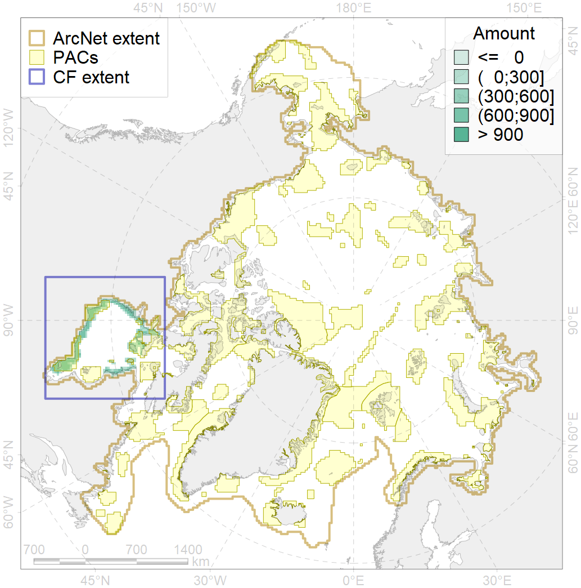
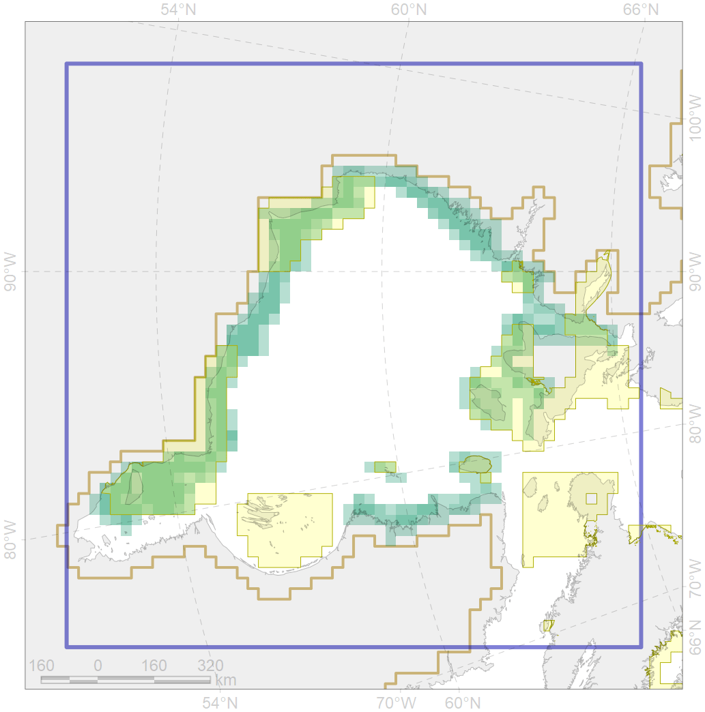

6064

| CF ID | 6064 |
| CF Name | Common eider (Somateria mollissima sedentari) Hudson Bay breeding&moulting grounds |
| Time Period | 1999 |
| Source(s) | Goudie et al 2000 |
| Seasonality | June-August |
| Depth Horizon | <50 m |
| Methodology | Field Data |
| Author Name | Gavrilo, Tertitski |
| Notes | |
| Conservation Target Set in the Scenario | 0.552 |
| Conservation Target Achieved in the Scenario | 0.558 (Scenario: 101.1%) |
| PAC ID | Proportion in the PAC | Contribution to ArcNet Target Achievement | PAC’s Contribution to the Achieved Target |
|---|---|---|---|
| 67 | 10.8% | 16.9% | 16.8% |
| 68 | 1.8% | 2.2% | 2.1% |
| 69 | 14.6% | 24.5% | 24.3% |
| 70 | 30.8% | 49.7% | 49.2% |
| 72 | 1.7% | 1.5% | 1.5% |
| inner | 59.7% | 94.9% | 93.9% |
| outer | 40.2% | 6.2% | 6.1% |